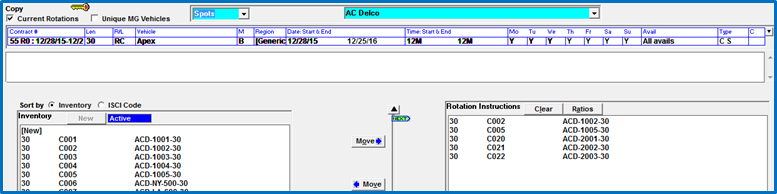
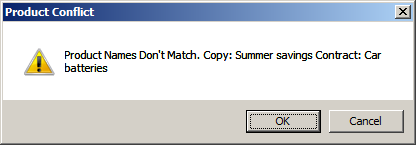
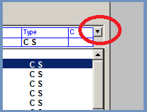
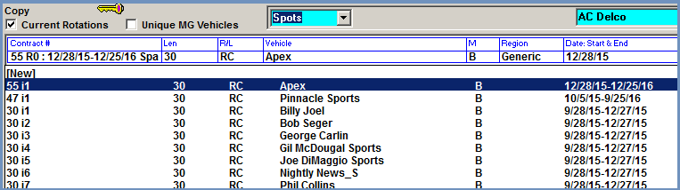

Defining Rotation Instructions
When the rotation header section is completely filled out, the copy inventory that is meant to air with the rotation header can now be defined. (If the Copy Grid is being used, skip to the Copy Grid section of this document for the steps to do this using the Copy Grid.)
Move the appropriate copy inventory from the Inventory box on the left side of the screen to the Rotation Instructions box on the right side of the screen.
Inventory can be moved by either clicking on the copy inventory to highlight it in blue then pressing the “Move” button with the arrow pointing to the right; or by dragging and dropping a piece of inventory from the left side of the screen to the right side of the screen. On version 8.1 and above, it’s possible to move more than one piece of copy at a time from the inventory section to the rotation instruction section, or from the rotation instruction section to the inventory section. To do this, either ctrl-click to select multiple pieces of inventory and then press the Move button, or click and shift-click to select a range of inventory and then press the Move button.

A warning message will appear when moving copy from the Inventory box to the Rotation Instructions box if the product on the inventory does not match the product defined in the Contract header.

To bypass this warning message and continue moving the inventory to the Rotation Instructions box, press “OK”. To Cancel the move, press “Cancel”.
If you need to move a piece of copy from the Rotation Instructions area to the Inventory area (perhaps because it was moved by mistake), select the inventory in the Rotation Instructions area by clicking it once so that it’s highlighted in blue, then press the “Move” button with the arrow pointing left to move it back. Alternatively, after selecting the copy, press the trash can icon in the lower right corner of the screen to remove it from the Rotation Instructions.
When you have finished adding all the copy inventory to the rotation instructions area, click “Save” to save the new set of rotation instructions. Note: a specific copy ratio can also be set up prior to saving as described in the section below.
After saving the copy rotation, it will be viewable on the copy rotation dropdown that is accessed by pressing the down arrow immediately to the right of the “C” (Comments) field of the Rotation Header.
Selecting the rotation dropdown arrow brings up the list of saved rotations.

Saved rotations can be viewed from the rotation dropdown menu.
